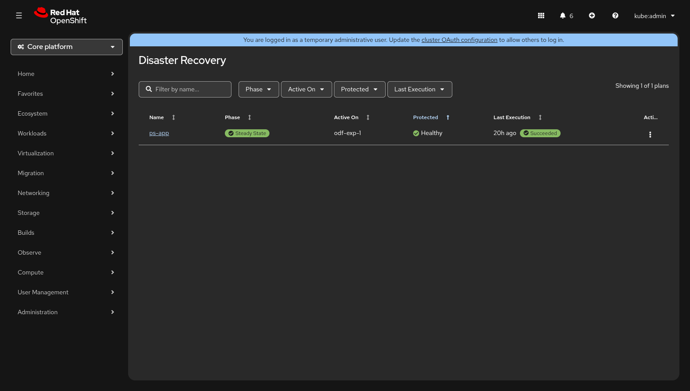
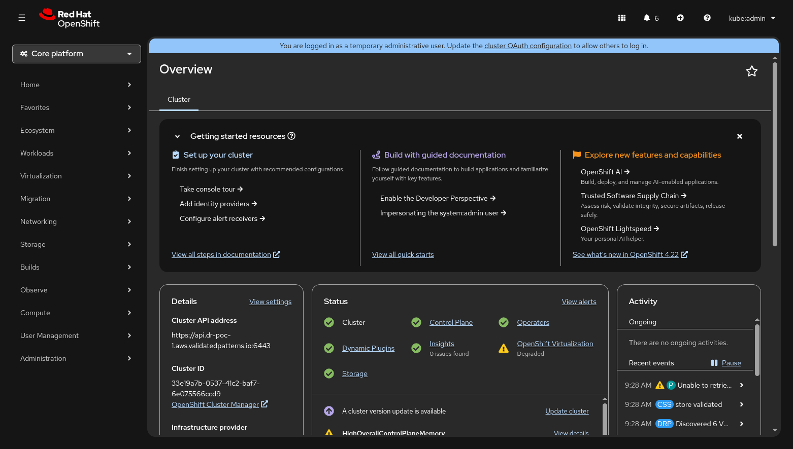

Dashboard¶
The Disaster Recovery dashboard is the primary landing page of the Soteria console plugin. It provides a single-pane-of-glass view of every DRPlan in the cluster, answering the question "Am I protected?" within seconds.

Accessing the Dashboard¶
The dashboard is registered as an OpenShift dynamic plugin and appears in the
cluster console under its own top-level navigation entry. After the Soteria
Helm chart is installed and the ConsolePlugin resource is enabled, navigate
to Disaster Recovery in the OpenShift side menu.
Soteria also publishes Kubernetes events on DRPlan and DRExecution resources. These events appear in the Activity stream on the cluster Overview page, giving operators a quick heads-up without navigating away from the default landing page.

Page Layout¶
The dashboard page is composed of three vertical sections:
- Alert banners — conditional warnings about replication problems (see Alert Banners below).
- Toolbar — a search box plus filter drop-downs for narrowing the plan list.
- Plan table — one row per DRPlan, with sortable columns showing real-time status.
Plan Table¶
The plan table is the core of the dashboard. Each row represents a single DRPlan and displays five data columns plus an actions menu.
Columns¶
| Column | Description |
|---|---|
| Name | The DRPlan resource name. Clicking the name navigates to the Plan Detail view. |
| Phase | The current lifecycle phase shown as a colour-coded badge (see Phase Badges). |
| Active On | The cluster site where workloads are currently running (e.g. odf-exp-1). |
| Protected | Replication health of the plan — an icon + label pair (see Replication Health). Warning icons appear when site-inventory or disk-topology checks fail. |
| Last Execution | The relative time since the most recent DRExecution completed, paired with a result badge (Succeeded, Partial, or Failed). Shows Never if no execution has run. |
| Actions | A kebab menu (⋮) exposing context-sensitive operations (see Actions Menu). |
The table is sortable on every data column. Click a column header to toggle ascending / descending order. By default the table sorts by Protected so that plans in the worst health state surface first.
Filtering and Search¶
The toolbar above the table provides:
- Search — a text input that filters plans by name (debounced at 300 ms).
- Phase — multi-select drop-down with all lifecycle phases.
- Active On — multi-select drop-down populated dynamically from the cluster sites present in the plan list.
- Protected — multi-select drop-down with health states: Healthy, Degraded, Error, Unknown.
- Last Execution — multi-select drop-down with result values: Succeeded, PartiallySucceeded, Failed, InProgress, Never.
Active filter chips appear in the toolbar and can be dismissed individually or cleared all at once. A counter on the right shows "Showing N of M plans".
Filter state and scroll position are persisted across navigation — returning to the dashboard restores the last-used filters. Filters are also stored in URL query parameters, so filtered views can be bookmarked and shared.
Phase Badges¶
Each plan's lifecycle phase is rendered as a PatternFly Label badge.
Phases fall into two categories:
Rest Phases (Filled Badges)¶
These represent stable states where no operation is in progress.
| Phase | Badge | Meaning |
|---|---|---|
| Steady State | Green filled | Workloads running on the primary site; replication active toward secondary. |
| DR Steady State | Green filled | Workloads running on the DR (secondary) site after reprotect; replication active toward primary. |
| Failed Over | Blue filled | Workloads migrated to the secondary site; reprotect has not yet run. |
| Failed Back | Blue filled | Workloads returned to the primary site after failback; restore has not yet run. |
Transient Phases (Outlined Badges with Spinner)¶
These appear while a DRExecution is actively running. A spinner icon replaces the static icon to indicate work in progress.
| Phase | Badge | Meaning |
|---|---|---|
| Failing Over | Blue outlined | Failover or planned migration is executing. |
| Reprotecting | Blue outlined | Reprotect is re-establishing replication after failover. |
| Failing Back | Blue outlined | Failback or planned migration is returning workloads to the primary site. |
| Restoring | Blue outlined | Restore is re-establishing replication after failback. |
Replication Health Indicators¶
The Protected column shows the replication health of each plan, derived
from the ReplicationHealthy condition on the DRPlan resource.
| Status | Icon | Colour | Meaning |
|---|---|---|---|
| Healthy | Green | All volume replication is functioning normally. | |
| Degraded | Yellow / Warning | Replication is partially impaired — some volumes may be lagging. | |
| Syncing | Blue / Info | An initial sync or resync is in progress. | |
| Not Replicating | Grey / Disabled | Replication is intentionally stopped (e.g. during an active execution). | |
| Error | Red / Danger | Replication is broken — the plan is unprotected. Immediate attention required. | |
| Unknown | Grey / Disabled | The ReplicationHealthy condition is missing or unrecognized. |
Warning Icons¶
In addition to the health indicator, two warning triangle icons may appear beside the health badge:
- Sites disagree on VM inventory — the
SitesInSynccondition isFalse. The VM sets discovered on the primary and secondary sites do not match. Actions are blocked until the discrepancy is resolved. - Disk topology inconsistent — the
DisksConsistentcondition isFalse. The volume attachment map differs between sites. Actions are blocked until the topology is corrected.
When either warning is present, the actions menu for that plan is disabled with a tooltip explaining the block reason.
Alert Banners¶
Alert banners appear at the top of the dashboard, above the toolbar, when one or more plans have critical or degraded replication. The banners are aggregated — one banner per severity level rather than one per plan.
| Banner | Variant | Trigger |
|---|---|---|
| N DR Plans running UNPROTECTED — replication broken | Danger (red) | At least one plan has ReplicationHealthy status Error. |
| N plans with degraded replication | Warning (yellow) | At least one plan has ReplicationHealthy status Degraded. |
Each banner includes a View affected plans action link that automatically applies the corresponding health filter to the plan table, letting the operator focus on the problematic plans immediately.
When all plans are healthy, no banners are shown.
Actions Menu¶
The kebab menu (⋮) on each plan row exposes DR operations that are valid for the plan's current phase. Only applicable actions are listed — the menu is empty (hidden) during transient phases.
| Current Phase | Available Actions |
|---|---|
| Steady State | Failover , Planned Migration |
| Failed Over | Reprotect |
| DR Steady State | Failback , Planned Migration |
| Failed Back | Restore |
| Transient phases | (no actions — execution in progress) |
Danger actions
Failover and Failback are marked as danger actions (red text) because they may involve data loss in disaster mode. Selecting an action navigates to the Plan Detail view where a confirmation dialog is presented before the DRExecution is created.
When the plan's SitesInSync or DisksConsistent condition is False, the
entire actions menu is disabled with a tooltip explaining why.
Cross-Cluster Awareness¶
The dashboard is designed for single-cluster visibility — each OpenShift cluster runs its own instance of the Soteria console plugin showing only the DRPlans known to that cluster. Cross-cluster awareness is provided through:
- Active On column — shows which cluster site currently owns the
workloads. The value comes from
status.activeSiteon the DRPlan and updates automatically after failover or failback. - Active On filter — the drop-down is populated dynamically from the set of cluster sites present across all plans, making it easy to filter plans by their current site.
- Replication health — reflects the end-to-end replication state between
clusters. A
Healthybadge confirms that data is being replicated to the peer cluster.
Comparing clusters
To compare the DR posture of both clusters side by side, open the Soteria dashboard in two browser tabs — one pointing to each cluster's OpenShift console.
Empty State¶
If no DRPlans exist in the cluster, the dashboard displays an empty-state message with guidance on how to create the first plan:
No DR Plans configured
Create your first DR plan by labeling VMs with
app.kubernetes.io/part-of=<app-name>andsoteria.io/wave=<number>.
A View documentation link opens the getting-started guide in a new tab.